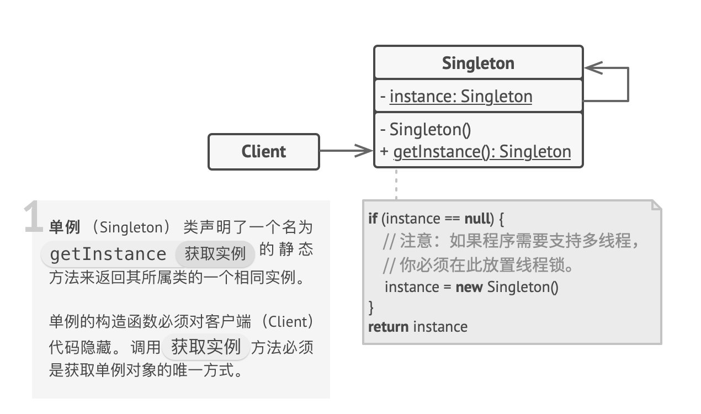
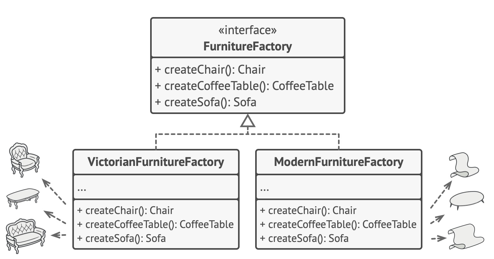
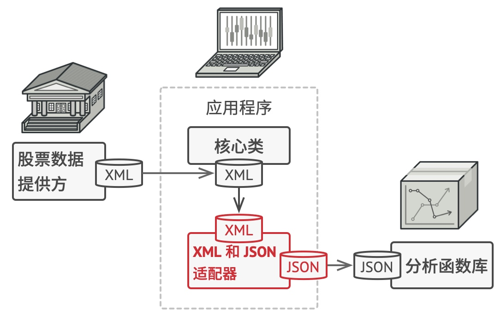
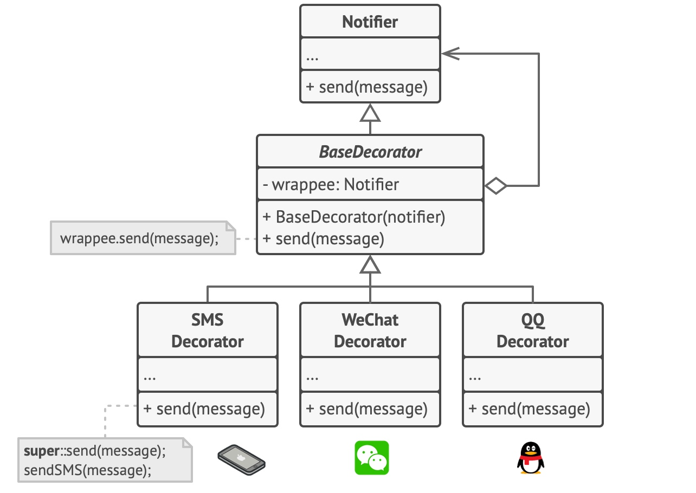
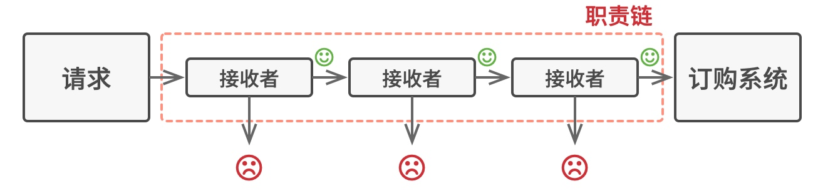
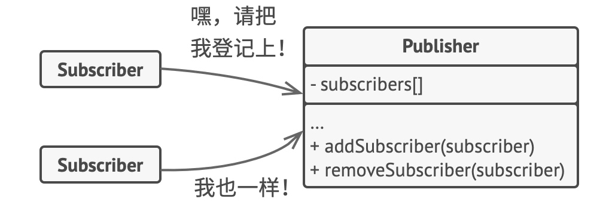

设计模式
我理解的设计模式实际上是在某些编码场景下，针对某类问题的一种通用的设计方法和解决方案。设计模式有 23 种共分为三大类：创建型模式、结构型模式、行为型模式，这篇文章总结我用过的设计模式。

创建型模式
单例模式
单例模式保证一个类只有一个实例——如果你创建了一个对象，同时过一会儿后你决定再创建一个新对象，此时你会获得之前已创建的对象，而不是一个新对象；为该实例提供全局访问节点，允许在程序的任何地方访问特定对象。

通过「双重检查锁」支持多线程创建单例对象：
1 | final class SingletonDemo { |
【应用】Spring 中管理的 Bean 默认就是单例的，所有请求共享同一个实例。极大提高了性能和资源利用率，避免了重复创建对象的开销。
工厂方法模式
定义一个抽象工厂接口，让子类实现这个工厂，负责创建具体的「一类对象」。
【应用】Spring 中 Bean 的创建（实例化）方法就有通过「静态工厂」、「实例工厂」来实现的，此外 Spring 还提供了 FactoryBean<T> 接口，允许我们自定义工厂来创建复杂的 Bean。
抽象工厂模式
使用抽象的接口提供一个工厂的工厂，用于创建「多个产品族」中的产品。

【应用】ApplicationContext 继承了 BeanFactory，可以看作是一个 Spring 内部的抽象工厂。
结构型模式
适配器模式
在应用程序中需要两个不同接口的类进行通信，在不修改两个接口的前提下需要通过某个中间件来完成这个衔接工作，这个中间件就是适配器。

【应用】
一）适配器 Adapter，被用于 SpringMVC 中。众所周知的是 SpringMVC 工作原理在 url 经过 HandlerMapping 查找能够处理请求的 Handler 之后，就要将请求交给实际的 Handler 进行处理，在 Handler 之前就要通过一个适配器，目的是将不同类型的 Handler(有最常见的控制层 Controller 之外还有更低级别的 HttpRequestServlet 等) 统一处理请求。
二）Java IO 中将字节流通过 InputStreamReader 适配器将字节转换为字符 FileReader。
装饰器模式
运行时为对象动态添加新功能，而不改变原始对象的结构。
它和继承的区别在于：装饰器是「组合」而非继承。虽然我们可以通过继承的方式给一个对象添加新行为，但是 ①对象之间的关系复杂不利于维护 ②单继承的局限性。

【应用】
一）Java IO 中对于字节流的 FilterInputStream 和 FilterOutputStream 是装饰器模式的核心，分别用于增强 InputStream 和 OutputStream 对象的功能——BufferedInputStream(字节缓冲输入流)、DataInputStream 就是 FilterInputStream 的子类。
1 | BufferedInputStream bis = new BufferedInputStream( |
二）【存疑】ThreadLocal → InheritableThreadLocal → TransmittableThreadLocal 的升级，在不改变 ThreadLocal 原本机制的情况下，增强 ThreadLocal 的功能。
代理模式
代理对象代替真实对象的访问，可以在不修改原目标对象的前提下提供额外操作——无入侵式的拓展代码。又分为静态代理和动态代理，根本区别是编译时或是运行时的字节码修改。
行为型模式
责任链模式
模式建议你将这些处理者连成一条链。链上的每个处理者都有一个成员变量来保存对于下一处理者的引用，除了处理请求外，处理者还负责沿着链传递请求。

【应用】Java 中 Web Servlet 的 Filter 过滤器。
观察者模式
用于「一对多」的依赖关系，当一个对象状态变化时，自动通知所有依赖它的对象。

【应用】Spring 中的事件监听机制。
模板方法模式
声明一个抽象的父类，将部分逻辑以具体方法的形式实现，然后声明一些抽象方法让子类来实现剩余的逻辑。
【应用】Java 中的抽象队列同步器 AQS 实现可重入锁、信号量、 CountDownLatch 倒计时器、CyclicBarrier 循环栅栏等。